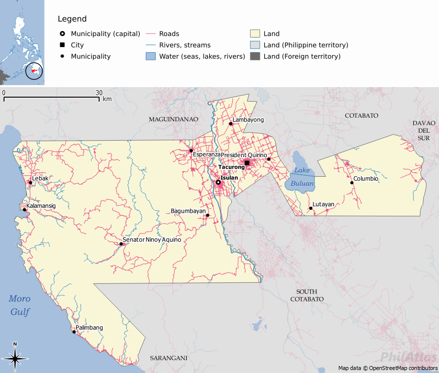

Sultan Kudarat serves as the primary transit heart of the region. The city of Tacurong acts as the "Grand Central Terminal" where major provincial land routes intersect.
Major Bus Lines
- ● Yellow Bus Line (YBL): Connects to General Santos City and Davao City.
- ● Husky Bus: The primary link to Cotabato City and General Santos.
Primary Hubs
Tacurong City and Isulan are the transit nerve centers. Most inter-provincial routes converge here before heading to coastal or mountain destinations.
The Coastal Route
The Sen. Ninoy Aquino (SNA) mountain road is an engineering marvel. This scenic, winding highway through the Daguma Range has replaced long sea voyages, cutting travel time to the coastal gems of Lebak and Kalamansig by hours.
Local Transport Icons
The "Skylab"
Modified motorcycles with wooden "wings" designed for balance on rugged mountain ridges like those in Columbio.
Tricycles
The local "King of the Road." Every municipality features a unique design adapted to its specific terrain.